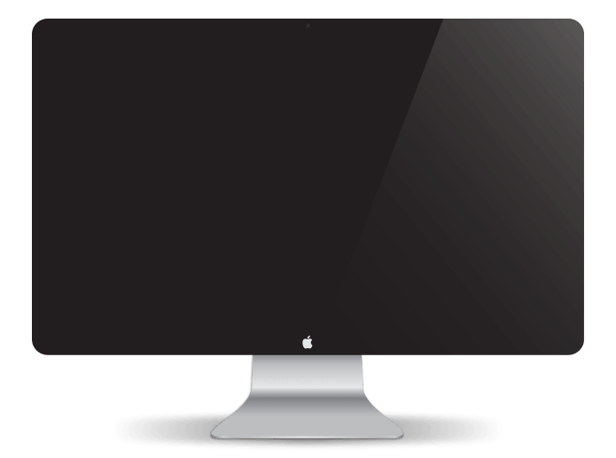
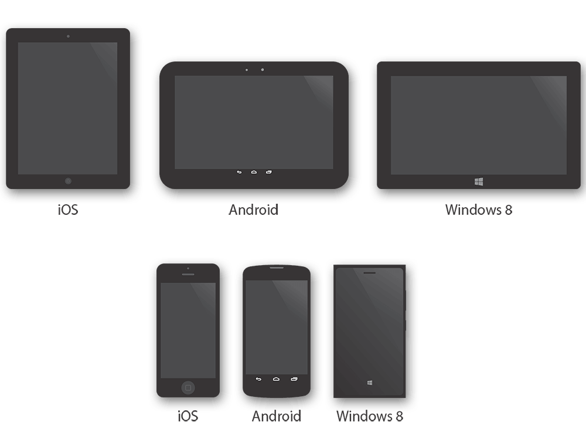
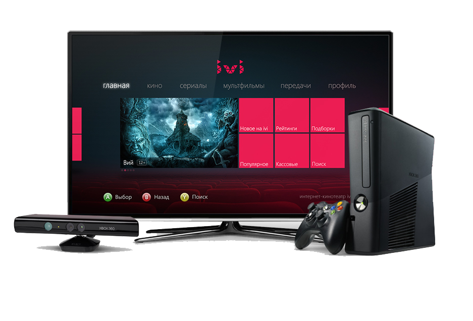
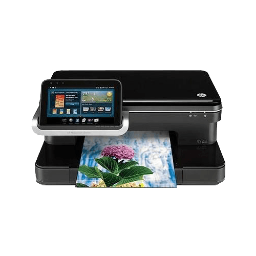
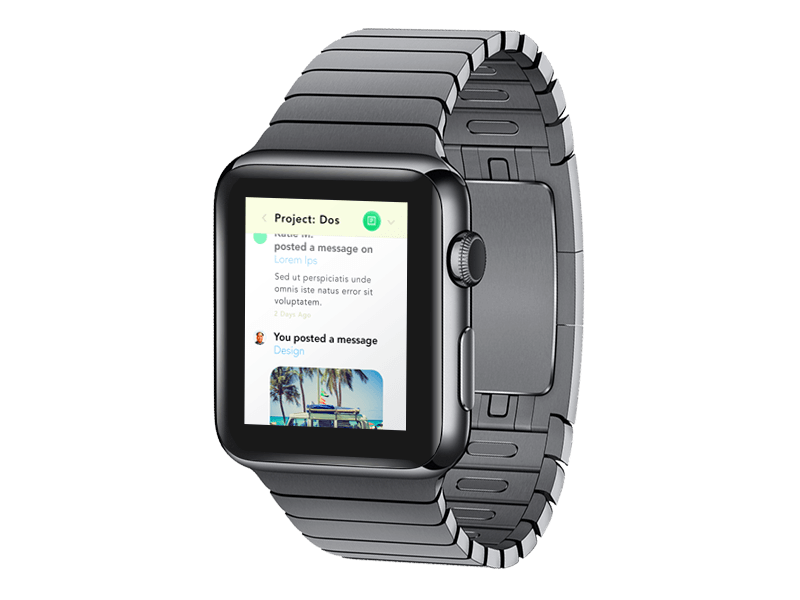
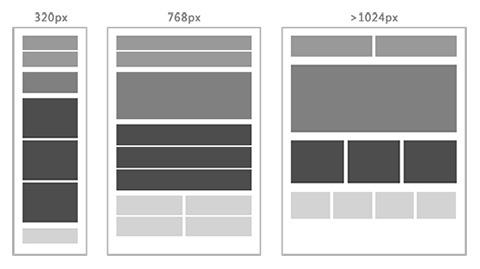

什么是响应式?
响应式网页设计最初是由Ethan Marcotte提出的一个概念：为什么一定要为每个用户群各自打造一套设计和开发方案？Web设计应该做到根据不同设备环境自动响应及调整。
响应式就是实现屏幕分辨率自适应以及自动缩放的图片等等的技术
吗？
新的设计思维模式
主流设备





等等...
这么多的设备，需要维护几套页面？
说不定，哪一天。
老板脑洞大开，说：“我们需要给iWatch也整个网站”。

给电视也整个网站。

嗯。好像完全可以。
- 电脑设备：www.xxx.com
- 移动设备：m.xxx.com
- 穿戴设备：i.xxx.com
- 电视设备：tv.xxx.com
- ...
响应式：xxx.com
优点
- 跨平台和终端且不需要分配子域
- 节省人力开发成本
- 表现力一致
如何实现?
设置viewport
1 | <meta name="viewport" content="width=device-width, initial-scale=1" /> |
viewport可以用来控制网页默认的宽度和高度
流动布局（fluid grid）
1 2 3 4 5 6 7 8 9 |
.main { float: right; width: 70%; } .leftBar { float: left; width: 25%; font-size: 1em; } |
使用float或者inline-block等布局，如果宽度太小，放不下两个元素，后面的元素会自动滚动到前面元素的下方，不会在水平方向overflow（溢出），避免了水平滚动条的出现。
使用百分比布局
使用em来替代px
使用em来替代px

选择加载CSS
1 |
<link rel="stylesheet" media="screen and (max-device-width: 400px)" href="tinyScreen.css" /> |
屏幕宽度小于400像素（max-device-width: 400px），就加载tinyScreen.css文件。
1 |
<link rel="stylesheet" media="screen and (min-width: 400px) and (max-device-width: 600px)" href="smallScreen.css" /> |
1 |
@import url("tinyScreen.css") screen and (max-device-width: 400px); |
CSS的@media规则
|
1 2 3 |
@media screen and (max-device-width: 400px) { selector{ ... } } |
同一个CSS文件中，也可以根据不同的屏幕分辨率，选择不同的CSS规则。
设备类型(media type):
all所有设备screen电脑显示器print打印用纸或打印预览视图handheld便携设备tv电视机类型的设备speech语意和音频盒成器braille盲人用点字法触觉回馈设备embossed盲文打印机projection各种投影设备tty使用固定密度字母栅格的媒介，比如电传打字机和终端
设备特性(media feature):
width视口宽度。height视口高度。device-width渲染表面的宽度（对我们来说，就是设备屏幕的宽度）。device-height渲染表面的高度（对我们来说，就是设备屏幕的高度）。orientation检查设备处于横向还是纵向。aspect-ratio基于视口宽度和高度的宽高比。如 aspect-ratio: 16/9。color每种颜色的位数。例如 min-color: 16会检测设备是否拥有16位颜色。color-index设备的颜色索引表中的颜色数。值必须是非负整数。monochrome检测单色帧缓冲区中每像素所使用的位数。值必须是非负整数，如 monochrome: 2。resolution用来检测屏幕或打印机的分辨率，如 min-resolution: 300dpi。scan电视机的扫描方式，值可设为progressive（逐行扫描）或 interlace（隔行扫描）。grid用来检测输出设备是网格设备还是位图设备。
响应式技巧
响应式图片

W3C草案:新定义标签<picture>
|
1 2 3 4 5 6 7 8 9 |
<picture width="500" height="500"> <img src="small-1.jpg" alt=""> <source media="(min-width: 640px)" srcset="large-1.jpg 1x, large-2.jpg 2x"> <source media="(min-width: 320px)" srcset="med-1.jpg 1x, med-2.jpg 2x"> <source srcset="small-1.jpg 1x, small-2.jpg 2x"> <noscript> <img src="external/imgs/small.jpg" alt="Team photo"> </noscript> </picture> |
|
1 2 3 4 5 6 7 8 9 |
<figure width="500" height="500"> <img src="small-1.jpg" alt=""> <div media="(min-width: 640px)" srcset="large-1.jpg 1x, large-2.jpg 2x"></div> <div media="(min-width: 320px)" srcset="med-1.jpg 1x, med-2.jpg 2x"></div> <div srcset="small-1.jpg 1x, small-2.jpg 2x"></div> <noscript> <img src="external/imgs/small.jpg" alt="Team photo"> </noscript> </figure> |
<picture>目前还不支持，但它的原理我们是可借鉴的，所以就诞生了一个用于图片响应式处理的类库Picturefill。
|
1 2 3 |
@media screen and (max-width: 800px) { .first td:nth-child(2), .first th:nth-child(2){ display: none; } } |
|
1 2 3 4 5 6 7 8 9 10 11 |
@media screen and (max-width: 768px) { table, thead, tbody, th, td, tr { display: block; } thead { display: none; } tr { border: 1px solid #ccc; } td { border: none; border-bottom: 1px solid #eee; position: relative; padding-left: 50%; } td:before { position: absolute; top: 6px; left: 6px; width: 45%; padding-right: 10px; white-space: nowrap; } td:nth-of-type(1):before { content: "First Name"; } td:nth-of-type(2):before { content: "Last Name"; } td:nth-of-type(3):before { content: "Job Title"; } ... } |
|
1 2 3 4 |
// 每个单元格使用data attributes <td data-label="First name">Chris</td> // css td:before { content: attr(data-label); } |
高分辨率(DPI)下的响应式处理
SVG优点可承载色彩丰富、设计复杂图形，且渲染不会出现边缘不顺滑；缺点是IE,安卓手机的支持不完美。Icon fonts支持多浏览器，图形颜色大小的修改成本低，易于维护；图形表现单一，不支持色彩丰富且复杂的图形，IE6渲染有毛边。-webkit-image-set只支持单个图形的适配，不利于图形合并，兼容不完美（Safari 6+, Chrome 21+）- 2x,3x,4x图片 蛋疼的网速，呵呵
高分辨率下的1px border

|
1 2 3 4 5 6 7 8 9 10 |
@media only screen and (-webkit-min-device-pixel-ratio:1.5), only screen and (min-device-pixel-ratio:1.5) { button { border:none; padding:0 16px; box-shadow: inset 0 0 1px #000, inset 0 1px 0 #75c2f8, 0 1px 1px -1px rgba(0, 0, 0, .5); } } |
缺点?
- 页面体积增大。性能低。
- 不适合页面较复杂的网站。
- 自由度太低，局限性较大。
- 非webkit内核兼容性较差。
怎么办？
内容优先 移动优先
其他解决方案？
性能优化
- 减少请求数量
- 减少字节数量
- 加速渲染
- 其他？
兼容性
- 渐进增强与优雅降级
- Respond.js
- Modernizr
- Adapt.960.js
一些思考
- 控制设计及开发成本
- 响应式图片的解决方案
- 针对旧浏览器的更好兼容
- WebAPP页面体积的响应式适配
- 针对代码实现和内容可维护性之间的权衡
一些思考
- 控制设计及开发成本
- 响应式图片的解决方案
- 针对旧浏览器的更好兼容
- WebAPP页面体积的响应式适配
- 针对代码实现和内容可维护性之间的权衡
questions?
thanks!